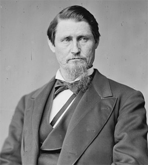
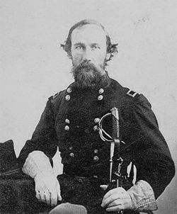

|
Largely spared from active warfare, Texas contained an intransigent majority
unwilling to accept the results of the conflict. Abraham Lincoln appointed a
Military Governor, Andrew Jackson Hamilton, who, however, never succeeded in
establishing his government fully. Hamilton was also appointed Provisional
Governor by Andrew Johnson in June 1865 in accordance with the Presidential Plan
of Reconstruction, but the disordered affairs and the large distances involved
|

James Throckmorton
|
delayed the electoral process until January 1866 so the constitutional
convention met only in February of that year. Consisting of arch-conservatives,
many of them former secessionists, that body framed a constitution ending
slavery but limiting the suffrage to whites and holding ex-Confederates immune
from damage suits. The conservative Unionist James W. Throckmorton was elected
Governor, while the new legislature emphasized its conservatism by refusing to
ratify the Fourteenth Amendment, passing black codes, and electing Confederate
officers to Congress.
Congressional Reconstruction ended the Throckmorton regime. In July 1867
General Philip H. Sheridan removed the Governor from office and appointed his
defeated rival, Elisha M. Pease, instead. A radical convention based on black
suffrage met in June 1868; although the radicals met opposition from former
allies such as Hamilton and Pease, they succeeded in framing a constitution
conferring large powers on the Governor, enfranchising the blacks, and
disfranchising those insurgents excluded by the Fourteenth Amendment. They also
proposed dividing the state in two and actually wrote a constitution for West
Texas. Their candidate for Governor, Edmund J. Davis, defeated Pease in the
subsequent elections.
The Davis administration was marked by the Governor's efforts to overcome
serious and often violent conservative opposition. Introducing free public
education for both blacks and whites alike, the legislature ratified the
Fourteenth and Fifteenth Amendments, furthered railroad construction amid the
|

Edmund J. Davis
|
usual charges of corruption, passed homestead acts, and sought to protect the
frontier.
The state was readmitted in March 1870, but the Governor earned great
unpopularity by attempting to postpone elections from 1870 to 1872.
In fact, the radical regime could not last. With the passage of the Amnesty
Act of 1872, the Democrats, who had already made gains in 1871, were assured of
victory in the following year. In spite of a last-minute attempt by Governor
Davis to postpone the inevitable by relying on a dubious court decision to annul
the 1872 elections leading to a Democratic triumph and the Republicans' refusal
to vacate the statehouse, the Democrats prevailed. Stealthily climbing into the
second story of the Republican-occupied capitol, they seized control. President
U. S. Grant refused to intervene, and "Redemption" began. In 1875 a new
constitution was adopted that diminished the appointive prerogatives of the
Governor, decentralized power, and ended mandatory education. As in other
states, the blacks were gradually reduced to political impotence, and
Reconstruction was over.
Source: Hans Trefousse, Historical Dictionary of Reconstruction
(Westport, CT: Greenwood Press, 1991), 226-27.
|